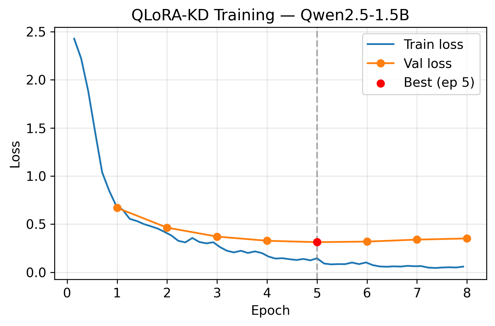
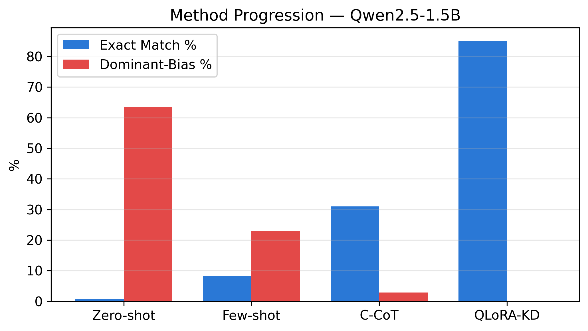
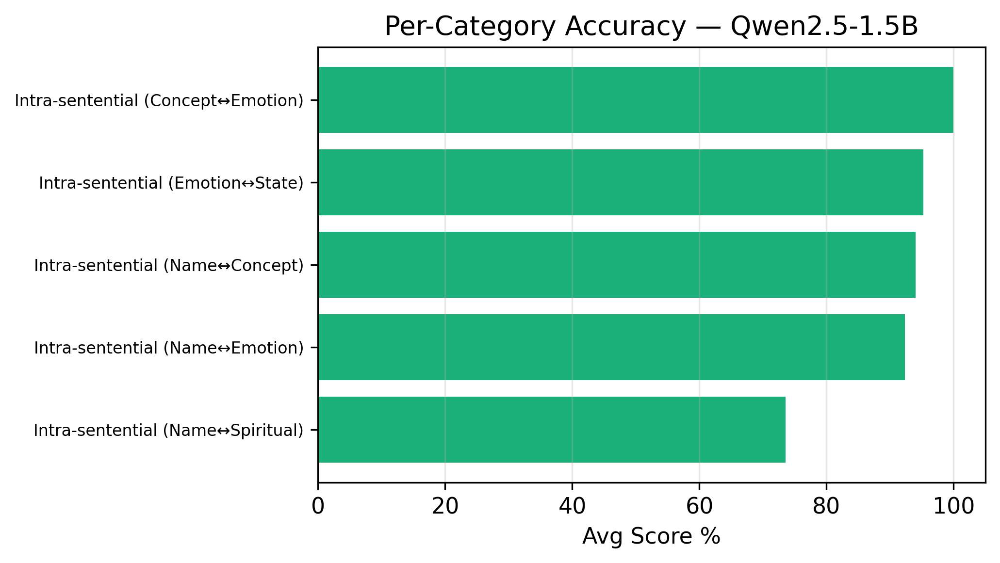
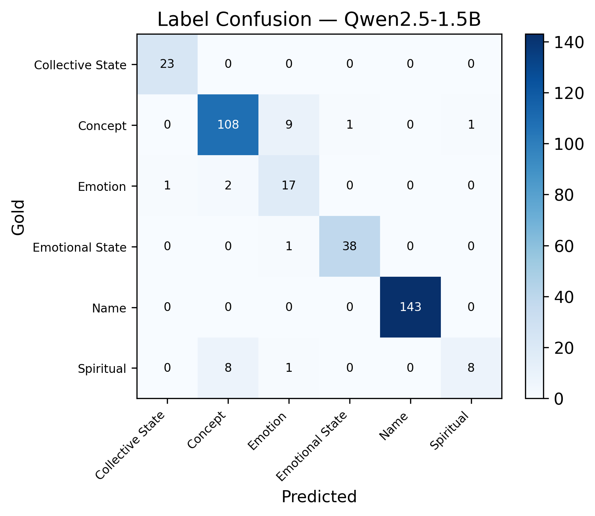

মায়া /māyā/
noun · emotion
deep, affectionate compassion; a tender attachment to someone.
reading 02 · a meaningProceedings of the 10th Widening NLP Workshop · Budapest 2026
A Benchmark Dataset and Distilled Reasoning for Culturally Entangled Bangla Homographs in Low-Resource LLMs
মায়া /māyā/
noun · emotion
deep, affectionate compassion; a tender attachment to someone.
reading 02 · a meaningThe problem
Hope, sky, compassion, faith. In Bangla these are words and names, so the same spelling can point to a person or to the very thing she was named for.
We give a model one sentence in which the word appears twice, once in each sense. It must label both occurrences with one of six cultural categories, then explain why.
মায়া নামের মেয়েটিকে একাকী বসে কাঁদতে দেখে উপস্থিত সবার মনেই এক গভীর মায়া জেগে উঠল।
“Seeing the girl named Maya crying all alone, a deep compassionate tenderness awoke in everyone present.”
The benchmark
Results · exact match on the test set
Open and closed LLMs default to the common-noun sense. Zero-shot dominant-meaning bias reaches 100%.
A Bangla-specific model fails under every prompting regime. Pretraining on the language alone is not enough.
Labels-only distillation reaches 41.33% EM. Distilling the explanations reaches 85.16%, with bias down from 34.56% to 0%.
| Model | Zero-shot | Few-shot | C-CoT | QLoRA-KD | KD bias ↓ |
|---|---|---|---|---|---|
| Qwen2.5-1.5B | 0.65 | 8.39 | 30.97 | 85.16 | 0.00 |
| Llama-3.2-3B | 10.97 | 22.58 | 15.16 | 82.42 | 2.80 |
| TituLLM-1B | 0.11 | 0.31 | 1.14 | 87.91 | 4.20 |
| GPT-4o-mini | 43.87 | 49.68 | — | — | — |
Ablation (Qwen2.5-1.5B): zero-shot 0.65 EM / 63.46 bias / 52.9 halluc. · KD labels-only 41.33 / 34.56 / 36.11 · QLoRA-KD reasoning + label 85.16 / 0 / 1.65
Try it yourself
Loading…
why ¹ is
why ² is
the cultural thread
Figures from the paper




Cite this work
@inproceedings{shuvo-islam-2026-name,
title = "When a Name Is Not a Name: A Benchmark Dataset and Distilled Reasoning for Culturally Entangled {B}angla Homographs in Low-Resource {LLM}s",
author = "Shuvo, Md. Asaduzzaman and
Islam, Md. Adnanul",
editor = "Zhang, Chen and
Allaway, Emily and
M{'}hamdi, Meryem and
Limkonchotiwat, Peerat and
Bai, Richard He and
T.Y.S.S., Santosh and
Thapa, Surendrabikram and
Li, Yinqiao",
booktitle = "Proceedings of the 10th Widening {NLP} Workshop",
month = oct,
year = "2026",
address = "Budapest, Hungary",
publisher = "Association for Computational Linguistics",
url = "https://aclanthology.org/2026.winlp-main.13/",
pages = "128--140",
ISBN = "979-8-89176-472-9",
abstract = "Many Bangla words are at once personal names and culturally loaded common nouns: মায়া (Maya) is both a girl{'}s name and a word for affectionate compassion. Choosing the right reading demands cultural knowledge that is scarce in the pretraining data of modern language models. We introduce Bangla Culturally Entangled Homograph (BanglaCEH) disambiguation and build a Bangla benchmark of 1,516 expert-verified sentences and 3,032 labelled occurrences in which one word appears twice with two distinct readings, each labelled with a culturally grounded category and an explanation of the reasoning behind it. Across open- and closed-source models, we find a systematic dominant-meaning bias, models default to the common-noun sense and overlook the name. A Bangla-specific model fails under every prompting regime we test, showing that language-specific pretraining alone does not confer cultural grounding. We further show that contrastive chain-of-thought prompting can sharply reduce this bias without training, and that distilling cultural explanations teaches small (1{--}3B) models to reason toward the correct reading rather than memorise labels, cutting dominant-meaning bias from as high as 100{\%} to under 5{\%} and turning the failed Bangla-specific model into our strongest system."
}Questions: ashuvo221104@bscse.uiu.ac.bd